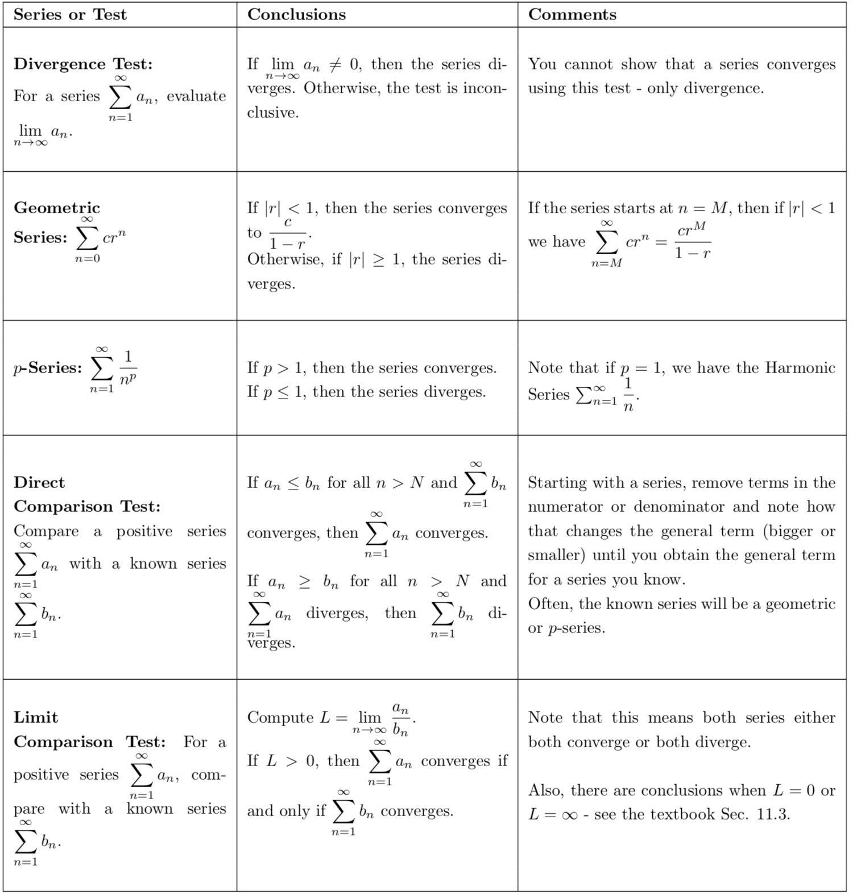
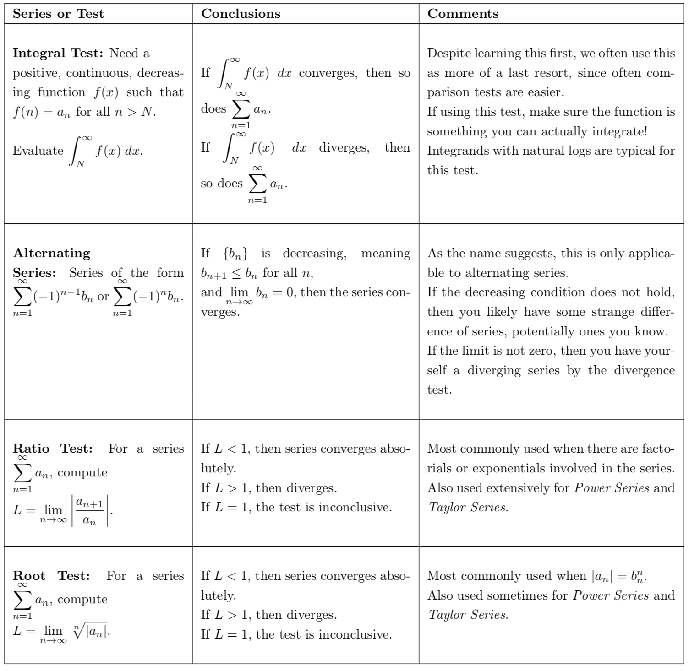

Introduction
-
Julia
- There are so many tests to keep track of for series!
-
Dylan
- Did you say test?! When??? WHY HAS NO ONE TOLD ME?!
-
James
- Calm down Dylan! Julia was talking about series tests, not an exam.
-
Dylan
- Oh, good, I was worried there for a second. Sucks how many series tests
we have to keep track of, huh?
-
Julia
- Do you think you could help us out James? Maybe a trick to remember?
-
James
- Well, there’s no better way to remember something than repetition!
Strategies for Applying Series Tests
In Section 11.5, the text gives a very detailed description of when to try and apply
each of our series tests. Here is a brief outline to follow when looking at a series :
- First thing to try: the Divergence Test. If , then we know that the series
diverges and we are done right away! Otherwise, and we have to try an
actual test.
- Next, try to see if the series is of a certain class that we know: a
Geometric Series, a -series, the Harmonic Series, etc.. Look for
variations as well - if the series looks like a sum or difference of two
geometric series, or a sum of a -series and a geometric series, etc..
Remember, the sum or difference of two converging series converges (this
is Theorem 1 in Sec. 11.2). (What happens if we add a diverging series
with a converging series?)
- Identify if the series has all positive terms. If it does not, determine if it
is an Alternating Series and try the Alternating Series Test.
- If the series has negative terms and is not alternating or does not
apply, you can try to determine if the series is absolutely convergent,
since absolute convergence implies convergence. Remember, this means
determining whether converges. You can either use the tests below for
positive series, or use the Ratio or Root Test, as these are tests for
absolute convergence. In particular, if there are any factorials involved,
you likely want to use the ratio test.
- Lastly for a non-positive series, make sure you have answered the question!
Does it ask for absolute/conditional convergence, or simply asks whether
the series converges or diverges? If the former, make sure you fully
investigate the series by checking for absolute convergence, especially if it
is an alternating series.
- Now, if your series is positive, or you are examining , then we can apply the
first three tests discussed in Sec. 11.3 - the Direct & Limit Comparison
Tests and the Integral Test. It’s a good idea to try Direct comparison
first. If that fails due to the inequality going the wrong way, then use the
Limit comparison test.
- If all of the above has failed you, then we have the Integral Test as our
backup test.
To help summarize the strategies you know, we will provide you this handy
table.


Practice Problems
Try to utilize the tests above to determine if the given series is converging or
diverging. If the series has negative terms, determine if the series is absolutely
convergent, conditionally convergent, or divergent.
Diverges Conditionally Convergent Absolutely Convergent
Diverges Conditionally Convergent Absolutely Convergent
Diverges Conditionally Convergent Absolutely Convergent
Diverges Conditionally Convergent Absolutely Convergent
Diverges Conditionally Convergent Absolutely Convergent
Diverges Conditionally Convergent Absolutely Convergent
Diverges Conditionally Convergent Absolutely Convergent
Diverges Conditionally Convergent Absolutely Convergent
Diverges Conditionally Convergent Absolutely Convergent
Diverges Conditionally Convergent Absolutely Convergent
Diverges Conditionally Convergent Absolutely Convergent
Diverges Conditionally Convergent Absolutely Convergent
Diverges Conditionally Convergent Absolutely Convergent
Diverges Conditionally Convergent Absolutely Convergent